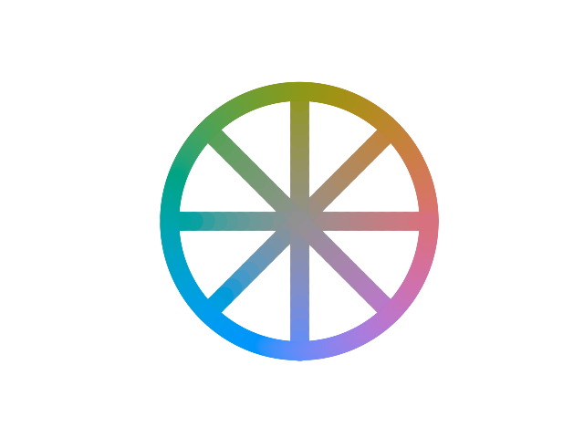
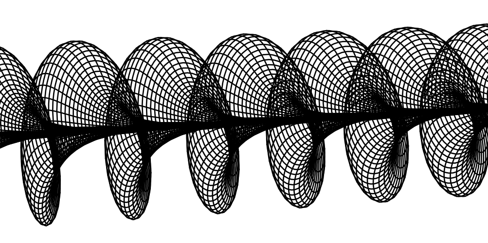

The colors in the diagram below are at the same luma, meaning they have more or less all the same perceived brightness. What changes is the chromaticity, which simply means all there is to a color minus the luma. We could talk of chromaticity in terms, for example, of chroma and hue, with chroma ("saturation" or colourfulness) being distance from the grey center, and hue instead is the angle around it.
Also, the colors have been "equally spaced", in the sense that along each segment we perceive the color to be gradually changing at the same, uniform rate. There is a major problem, however. It seems that colors in the circumference change at a faster rate than in the radial segments. If we wanted to represent the true length of these gradients correctly, with the same rate as in the radial ones, then the circumference would buckle and get wavy just to fit:
This is called hue superimportance, or simply the fact that for saturated colors, hue matters more than expected for determining how different two colors look. This "expectation" is that of a regular, Euclidean geometry to the space of colors. Instead, the geometry of colors is one in which circles are longer than Euclidean circles of the same radius, which suggests that it is actually Hyperbolic. In this paper
Ivar Farup, "Hyperbolic geometry for colour metrics," Opt. Express 22, 12369-12378 (2014)
the author provides evidence that the metric of the Hyperbolic plane is a better fit for data on the perception of color differences than the Euclidean one, primarily due to hue superimportance. They also determine the best matching map of colors into the hyperbolic plane among some reasonable candidates, so that's what we'll be using.
I wanted to represent the "true" geometry of colors (at a certain luma) in such a way that distances really corresponded to the perceived difference, and so that in all directions gradients varied at a uniform rate. To do so we have to find a way to represent the hyperbolic plane. However, that turns out to be really tough: hyperbolic space really has a lot of "space" to it, so to speak, and it's hard to fit it in a way that's easy to visualize. A very convenient representation is given by conformal models, which have the property of accurately representing angles, and one example is the Poincaré disk model, which fits the whole hyperbolic plane in a circle. This is the circle in the right side of the interactive demo above. However, it doesn't really portray distances very well, and things quickly get very squished. Color gradients don't look uniform to our Euclidean-habituated brains, even if they might actually be according to the hyperbolic metric.
So we might think to maybe construct some kind of curved surface in 3D space that has the geometry of the hyperbolic plane. It is in fact impossible to do so, at least with a smooth surface, a theorem first proven by David Hilbert - hyperbolic space is just too much, it simply doesn't fit. We can, however, map a piece of it. Surfaces which are equal to a piece of the hyperbolic plane are called pseudospherical surfaces. There's many and they're all quite mesmerizing to look at; they have the sinuous forms of exotic flowers. At all of their points they have the characteristic saddle shape they need to correspond to the negative curvature of hyperbolic space. We know many pseudospherical surfaces because it turns out you can wrap them in a sort of fishnet stockings, called a Chebyshev net, and if you do so, then the way the net shears across the surface corresponds, in a sense, to the behaviour of a physical system known as the sine-Gordon model. In the sine-Gordon model, there can be objects called solitons which are vaguely like billiard balls, drifting about, bouncing off one another, and being involved in other sorts of wacky antics. If we take a single soliton and let it drift alone forever, the resulting surface, wrapped in its fishnet, is this
This is Dini's surface, after Ulisse Dini, and it's a pretty good candidate for laying our colors onto. It maps a serviceably-sized slice of the hyperbolic plane (in fact, it's pretty tough to beat it), and the mathematics of the mapping is relatively approachable. In the demo, the part of the Poincaré disk not greyed out is that which is mapped onto the Dini surface. By changing the "Blossom" parameter, you can change the precise shape of the Dini's and get a thinner, but clearer slice, or a thicker but more rolled up one. Then, using the other parameters, you can try and fit most of the space of colors into the slice so that it appears on the surface. Getting all colors together in a way that's readable is difficult, but whichever part of them you can fit, you then know that the resulting flower is truly correctly representative of their geometry, i.e. distances along the "petals" are color differences, and all gradients in all directions are truly uniform.
In this stackoverflow answer Robert Bryant determines the isometric map between the Dini surface and the half-plane model of the hyperbolic plane. I am very grateful as this has proven an invaluable resource for this.
The Poincaré disk and half-plane model are in turn connected by a simple fractional linear transformation, as is well known, so converting between the two is easy.
Farup determines the best matching hyperbolic color distance metric to be the a particular Euclidean metric "hyperbolicized" to a radius of R=28.6. The Euclidean(-ish) metric in question (DIN99) is that described, for example, in this paper
Cui, Guihua & Luo, Ming & Rigg, B. & Roesler, G. & Witt, K.. (2002). Uniform colour spaces based on the DIN99 colour-difference formula. Color Research & Application. 27. 282 - 290. 10.1002/col.10066.
which is a "squished and rotated" transformation of CIELAB. DIN99 improves over CIELAB in terms of homogenizing the spacing of hues on the color circle, for example correcting the excessive space CIELAB provides to greens. To be precise, there's multiple candidates presented in the paper; the variant DIN99c is the one that fits best in hyperbolic form.
The "hyperbolicization" consists simply in taking the DIN99c chroma as defined to be directly a hyperbolic radial geodesic distance from the origin (gray), with hue being the angular coordinate as-is, in a negatively-curved space of radius R=28.6. Since in DIN99c colors get to a maximum chroma roughly in the ballpark of 60, the curvature is definitely significant - a circle at that radius has a length almost twice its flat counterpart. This geodesic radius can then be very easily mapped, for example, to the Poincaré disk radius (and vice versa).
Not all chromaticities are physically possible, there is only a fingernail shaped lobe of possible colors. So the space of colours will always be a finite portion of the hyperbolic plane at best. But that's not the end of it: RGB digital displays can only display a substantially smaller subset (gamut) of possible colours. This is the region that is shown in the demo - I won't represent any out-of-gamut colors at all. Because RGB has a maximum intensity for each channel separately, the shape of the gamut at each luma is not actually simply a triangle between R,G,B, but a strange polygonal shape. This is actually the RGB cube, twisted and mangled beyond recognition by all the color space conversions, and then sliced by luma like meatloaf. If you move the luma slider carefully, you can almost make out the cube and its eight corners, in order: black, blue, red, magenta, green, yellow, and white.
I have programmed the demo in rust, using the three_d crate for 3D rendering and UI. The long chain of mappings to go all the way from Dini to sRGB is pretty tortuous and involves a lot of calculations, so I had to move as much of that as possible onto the GPU. This is the current setup: